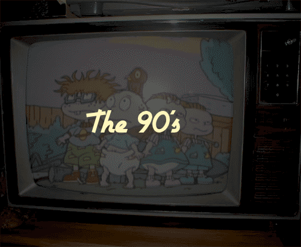
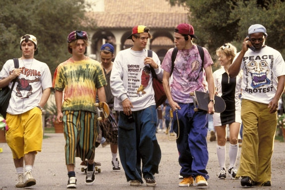
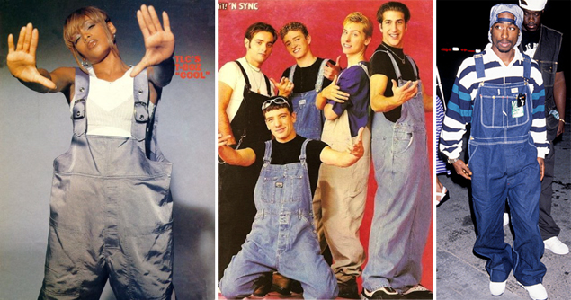
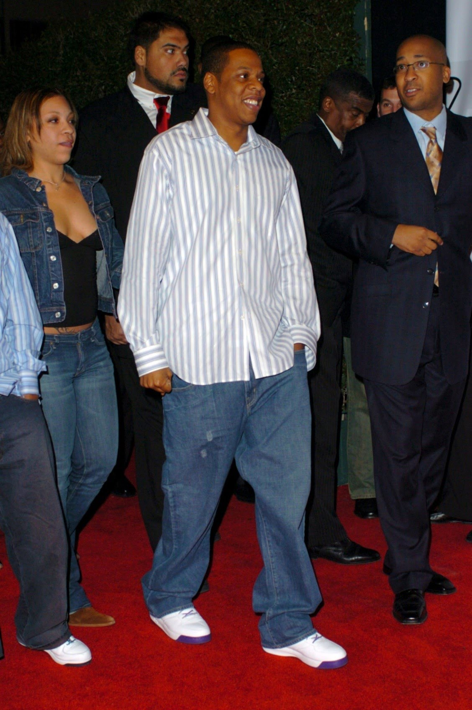

The stylish men of 90s
The 90s style was mainly with larger and unfit clothes.An example can be seen below.

Men's fashion was mostly with those types of clothes until recent years. In the picture below
celebrities also had the "baggy" style which a lot of people liked

Large jeans was one of the biggest change from the 90s to today's style.
Even if they're out of style there are some who still like to show the old school style.

Here, Jay-Z wears those type of clothes and it is a little more acceptable for him to
since he was a rapper in the 90s,anyone that just now would try to get into that style just simply looks bad.